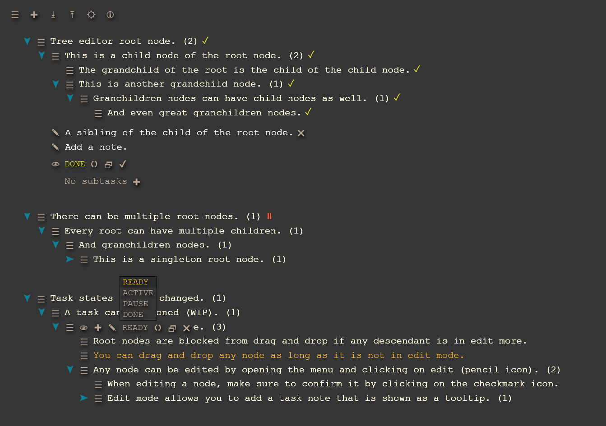

Click on the edit icon (✎) to enter edit mode for the task. New tasks start in edit mode. While in edit mode, edit the task name, and optionally a task note while the task is in edit mode. Click on the checkmark icon (✓) to confirm changes.
Use the root menu to add a new root task by clicking on the plus icon (✚)
Click on the plus icon (✚) in the task menu or in edit mode to add a new child task.
Click on the x icon (✖) to delete a root task or subtask.
Click on the eye icon (üëÅ) to begin focus mode. While in focus mode, click on the checkmark icon (✓) to mark the task as complete or the pause icon () to pause the task. THis will walk down the task tree until it reaches one of the leaf tasks.
Click and drag tasks to rearrange the task tree. Dragging a task on top of another tasks make the dragged task a subtask. Dragging the task slightly below or above another task reorders the tasks. Dragging a task slighly above ore bloew another root task, promotes that task to a root task.
Click on the sync icon (⇣) to sync the whole task tree. All subtasks will inherit the task state.
Click on the clone icon (⚯) to clone the task. Cloned tasks are added at the same level.
From the task menu, change the state of the task.